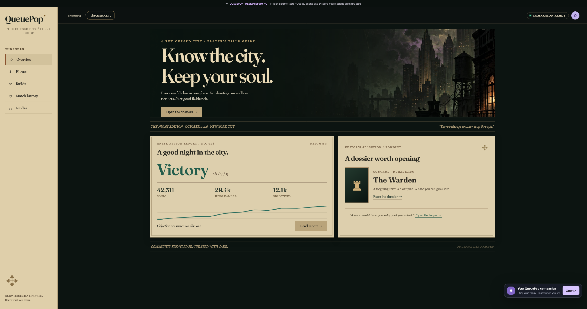
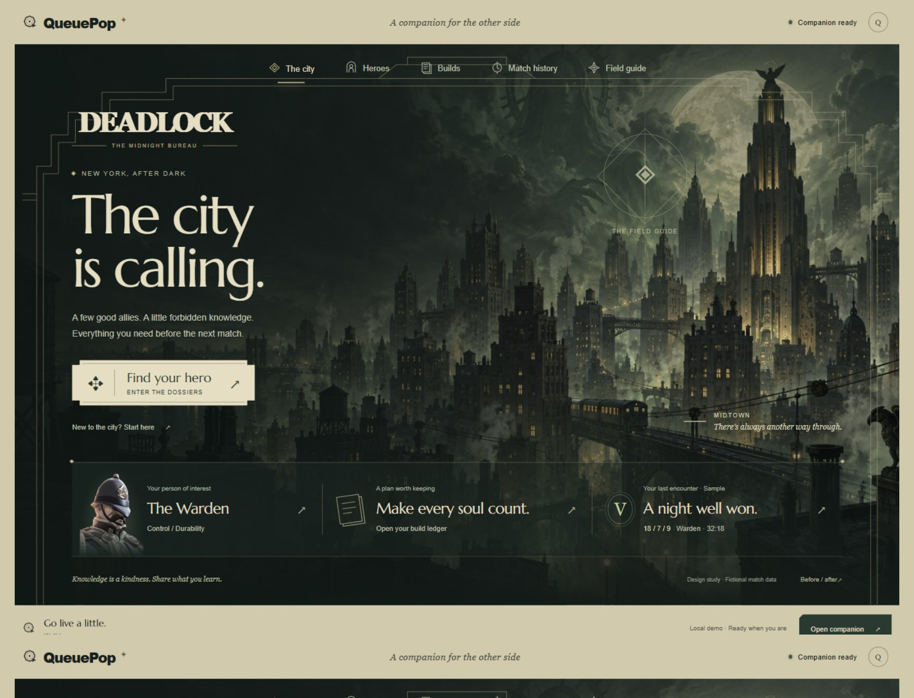
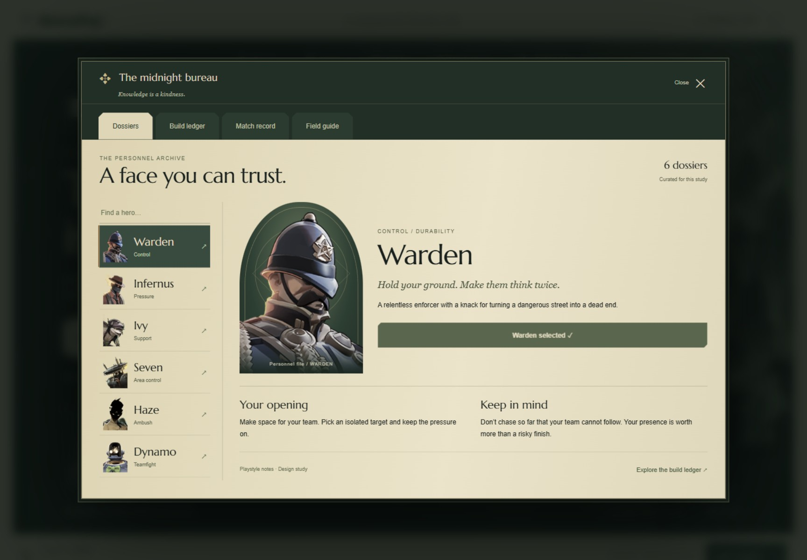
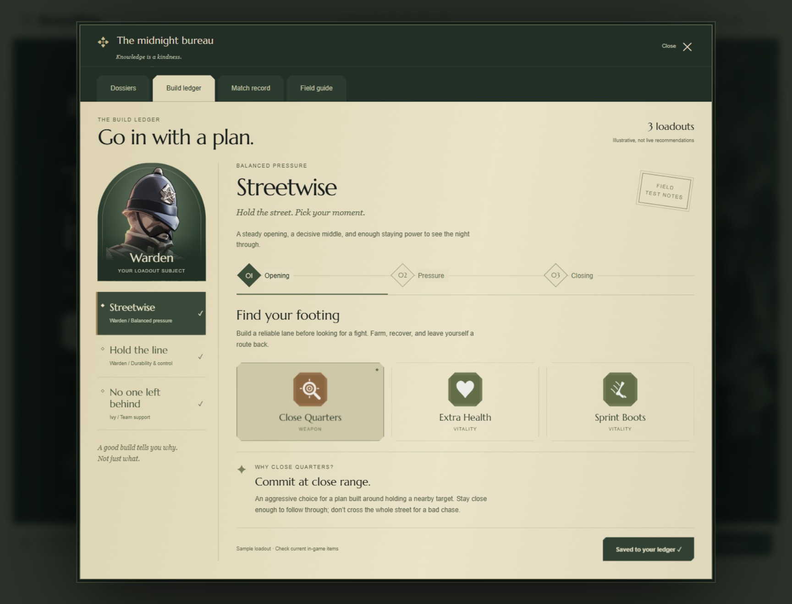
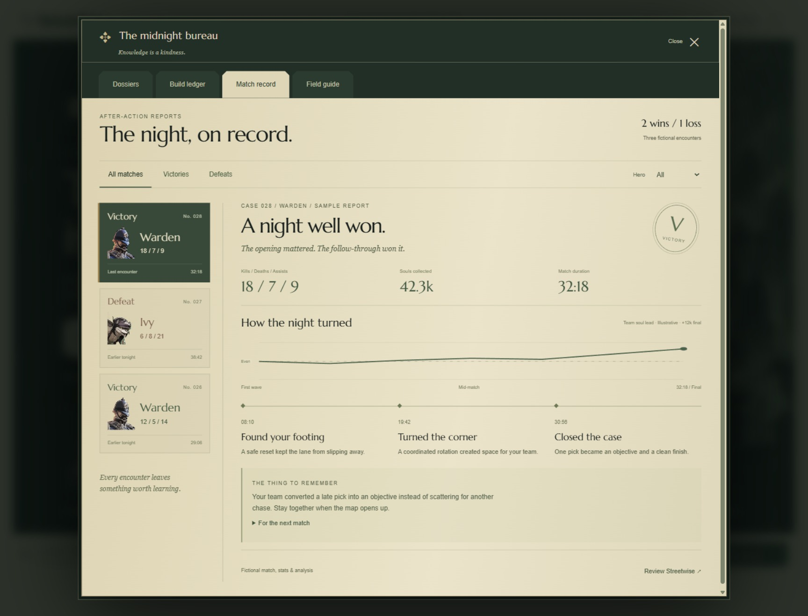

The same Deadlock focus, rebuilt around atmosphere, a quieter hierarchy, and navigation that belongs to the world.
Before · V2
The original supplied screenshot: sidebar, rectangular banner, and two large stat cards.
After · The midnight bureau, refined
A city-sized scene, architectural framing, ticket controls, and a compact record of the night.
View the previous design pass
Inside the bureau
A searchable hero directory, character dossiers, and navigation between archive sections.
The build ledger
Illustrated loadouts, staged purchases, and a reason behind every item. Switch plans and save them on this device.
The night, on record
Individual after-action reports with hero portraits, a momentum chart, key moments, and a linked loadout. All encounter data is fictional.